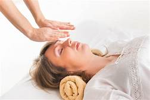

Astrology, Tarot and Reiki
Karmic astrology
Karmic astrology is the study of the energies that interact between planets and luminaries of the solar system and human beings, including karmic factors, such as Lilith, the black moon, Chiron, which represents pains from the past, and lunar nodes, this is 'what I bring" and what I can do better, or improve from that I'm bringing. These three are important for human conscience evolution. Taking into account what we described before, any person can ask an astrologer with knowlegde about karmic factors a complete study of a person's existence, karmic natal chart or a karmic solar revolution, as well. (a study that includes a whole year), for the consultant to work internally. The chart or revolution study takes from 5 to 7 days to deliver, with online or personal counseling. For further information, you can leave a message on our contact section.

Reiki
Human body healing through hands imposition comes form millions of years ago. This period of light for the Earth inhabitants by that time brought developed qualities, such as keeping a spiritual-psychophysic equilibrium in order to keep a good life quaity, and consequently, a life entension. From that far immemorial time, from which we have a trace today, hands imposition has been inherited in meny locations around the planet. One of them is known as Reiki, which is te combination of two types of energy: vital, which moves human bodies, and universal, which surrounds us all. To pass that energy from a body to another and give to it the chance to energize it, to keep it into a more relaxed state and improve physically, emotionally and spiritually, energry is pased through both palms of the hands simultanoeusly. A Reiki session gives energy to a body, relaxes it and transmutes other energies that this body could contain. This is done from one person to another. A Reiki session lasts approximately 42 minutes. Dr. Mikao Usui Reiki line has its origins in 1922, when he discovered that with self-healing, and then healing other people, the possibility to keep bodies in an equilibrium state.
Tarot
Tarot is a deck of cards composed by certain figures or arcanes, used in cartomancy or fortune telling through cards. The Marselles Tarot is composed by 78 arcana, divided in 22 major arcana and 56 minor arcana. The major arcana are easily identificable because they have figures, which are given 5 ways to transmit energy. The rest are minor arcana. The Tarot reader can interpret emotional states, past, present and future facts that belong to the consultant (who can be the person performing the questions or someone else) Future facts are usually tendencies, and they do not imply a rigid concretion of those possibilities, but they show what could happen if everything is left as it is. The consultant can twist the way thing will go, through conscious or unconscious actions.
Major arcana
Each one of the major arcana has a part that talks about a symbolic key, through which we can know something about the history of that image, a psychologic key, that is transmitted at the moment of the cards throwing, about the person about we're asking or even the consultants themselves, a practical and divinatory key, and final the sexual/love key.
Major arcana
Minor arcana are 56, there are 4 elements: swords, knights, cups and pentacles. Cups talk to us about love, friendship, happiness, creativity, fertility. Pentacles talk to us about money, fortune, material wealth. Knights talk to us about projects, proffessional success, work and intelligence. Swords express obstacles, oppressions, impediments and fights. The fact that they are minor arcana does not mean they have less importance, but it means they have another significance or summary in a cards throwing. Each of these elements also represent a part of human body that could be affected, illness appearance or any conflict that could take place in the human body, at a physic, psychological level.
Orientation through personalized cards reading
You can consult Tarot to know key aspects of your life, your possibilities in th future and probable fate in finance, projects and love. We perform precise distance readings with detailed informs through e-mail. For further information , please write to tarotreikiastral@gmail.com or call (54) 11 6246 7996. You can also leave a message on our contact section.